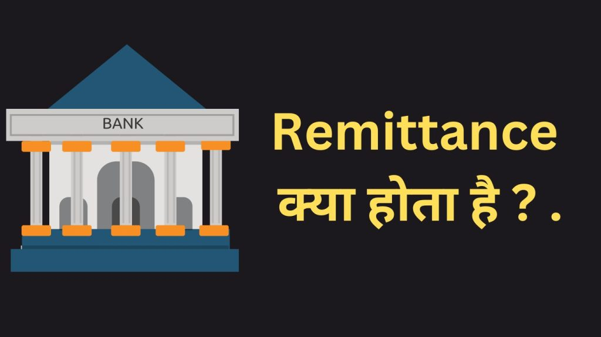

Introduction:-
दोस्तों हमारे द्वारा प्रस्तुत किए गए इस Post के माध्यम से हम Bank में Remittance क्या होता है यह Detail में समझेंगे और आपको इसके बारे में संपूर्ण जानकारी देंगे। Bank में Remittance सेवा से क्या फ़ायदे हैं। Remittance सेवा का उपयोग कैसे करते हैं सभी जानकारी इस पोस्ट में आपको देने वाले हैं । तो चलिए शुरुआत करते हैं ।
Bank में Remittance का अर्थ (Remittance Meaning in Bank in Hindi)
Bank में Remittance का अर्थ है एक ऐसा Banking Process जिसमें एक Person या Organisation एक देश से दूसरे देश में पैसों को भेजता है या प्राप्त करता है। यह विदेशी मुद्रा के माध्यम से हो सकता है और यह Account To Account या कैश To Account भी हो सकता है। Remittance एक सुरक्षित और विश्वसनीय तरीका है जिसके माध्यम से Person or Organisation एक देश से दूसरे देश में पैसों को सुरक्षित रूप से भेज या प्राप्त कर सकता है।
Bank में Remittance की महत्वपूर्ण जानकारी
Remittance Banking में एक महत्वपूर्ण विषय है और बहुत सारे लोग इसके बारे में अनजान होते हैं। हम यहां Remittance के बारे में कुछ महत्वपूर्ण जानकारी दे रहे हैं जिसे आपको जानना आवश्यक है:-
{kind=link}

1. Bank में Remittance कैसे काम करता है?(How Remittance Service Work In Bank )
Remittance की Process में एक Person or Organisation एक Bank या अन्य वित्तीय संस्था में जाता है और वहां से पैसे भेजता है। वित्तीय संस्था इस Process के लिए विभिन्न तरीकों का उपयोग करती है, जैसे कि Wire Transfer , Cheque, Internet Banking, ई-वॉलेट( E-Wallet) , आदि। एक बार पैसे भेजे जाने के बाद, वित्तीय संस्था प्राप्त करने वाले देश के Bank या संबंधित संस्था में पैसे को भेजती है। उस समय वित्तीय संस्था इन पैसों की सुरक्षा और गणना की जांच करती है और प्राप्तकर्ता के खाते में पैसे क्रेडिट करती है।
2. Remittance के लाभ ( Benefit Of Remittance Service)
Remittance के कई लाभ हैं जो इसे एक प्राथमिक वित्तीय सेवा बनाते हैं। कुछ महत्वपूर्ण लाभ निम्नलिखित हैं:
- तेज़ और सुरक्षित: Remittance के माध्यम से पैसे भेजना और प्राप्त करना तेज़ और सुरक्षित होता है। Bank और वित्तीय संस्थाएं आपकी गोपनीयता की रक्षा करती हैं और पैसों की सुरक्षा के लिए सख्त नियमों का पालन करती हैं।
- अतिरिक्त सुविधाएं: Remittance के माध्यम से आप विभिन्न सुविधाओं का लाभ उठा सकते हैं, जैसे कि ऑनलाइन Banking, मोबाइल ऐप्स, ई-वॉलेट, आदि। ये सुविधाएं आपको पैसों को सरलता से भेजने और प्राप्त करने में मदद करती हैं।
- वित्तीय समावेश: Remittance द्वारा पैसे भेजने के लिए किसी Person or Organisation को उच्च मानदंड और वित्तीय समावेश की आवश्यकता होती है। इससे उन्हें वित्तीय प्रणाली में शामिल होने का मौका मिलता है और उनकी वित्तीय स्थिति मजबूत होती है।
3. Remittance की विभिन्न प्रकार (Type Of Remittance ):-
Remittance कई प्रकार की हो सकती है, जो निम्नलिखित हैं:
- एकाउंट To एकाउंट (A2 A): इसमें पैसे एक Bank खाते से दूसरे Bank खाते में सीधे भेजे जाते हैं। यह तरीका सुरक्षित और व्यापक होता है।
- कैश To एकाउंट (C2A): इसमें पैसे नकद रूप में एक संबंधित Bank या वित्तीय संस्था से दूसरे Bank खाते में भेजे जाते हैं।
- एजेंट नेटवर्क: इसमें Person or Organisation एक Remittance एजेंट के माध्यम से पैसे भेजते हैं, जो उनके लिए पैसों को प्राप्त करता है और उन्हें सीधे लेनदाता के पास भेजता है। यह विशेष रूप से ऐसे क्षेत्रों में उपयोगी है जहां Banking सुविधाओं की कमी होती है।
4. Bank में Remittance के उपयोग ( Uses Of Remittance )
Remittance के उपयोग कई तरह से हो सकते हैं। यहां हम कुछ महत्वपूर्ण उपयोगों के बारे में चर्चा कर रहे हैं:-
- विदेशी वित्तीय सप्लाईर्स: विदेशी व्यापारियों और संगठनों के लिए Remittance उपयोगी होता है। वे अपने विदेशी वित्तीय सप्लायर्स को सही समय पर भुगतान करने के लिए इसका उपयोग करते हैं।
- नौकरी विदेश में: अक्सर लोग विदेश में नौकरी के लिए जाते हैं और अपने परिवार को रूपयों को भेजने के लिए Remittance का उपयोग करते हैं। इससे उन्हें वित्तीय सहायता मिलती है और परिवार की जरूरतों को पूरा करने में मदद मिलती है।
- शिक्षा विदेश में: छात्रों के लिए Remittance विदेशी शिक्षा की फीस और खर्चों को भुगतान करने के लिए उपयोगी होता है। इससे छात्रों को आराम से पढ़ाई करने में मदद मिलती है और उनके परिवार को पैसे भेजने के लिए आसानी होती है।
- व्यापारिक उपयोग: व्यापारियों के लिए Remittance उपयोगी होता है जब वे विदेशी देशों में व्यापार करते हैं और अपने विदेशी ग्राहकों को भुगतान करने के लिए Remittance करते हैं। यह व्यापार की सुविधा में सुधार करता है और व्यापारियों को अपने कारोबार को आगे बढ़ाने में मदद करता है।
5. Remittance के साथ सुरक्षा के तरीके
Remittance के दौरान सुरक्षा महत्वपूर्ण है। यहां हम कुछ सुरक्षा के तरीके देख रहे हैं:
- वैध प्रमाणपत्र: Remittance करने वाले को अपनी पहचान प्रमाणित करने के लिए वैध प्रमाणपत्र की आवश्यकता होती है। इससे गलत और अवैध लेनदाताओं के प्रयासों को रोका जा सकता है।
- सुरक्षित तकनीकी प्रणाली: Bank और वित्तीय संस्थाएं Remittance के लिए सुरक्षित तकनीकी प्रणाली का उपयोग करती हैं। इससे पैसों की सुरक्षा सुनिश्चित होती है और Third Party Attack बचाया जा सकता है।
- गोपनीयता की रक्षा: Bank और वित्तीय संस्थाएं Remittance के दौरान गोपनीयता की रक्षा करती हैं। यहां पर्सनल और वित्तीय जानकारी को सुरक्षित रखने के लिए सख्त नियम होती हैं।
अक्सर पूछे जाने वाले प्रश्न (FAQs)
1. Remittance क्या होता है?
Remittance एक विदेशी Exchange की Method है जिसमें विदेश में नौकरी करने वाले व्यक्ति या संस्था अपने परिवार सदस्यों को धनराशि भेजते हैं।
2. Remittance का महत्व क्या है?
Remittance देश के अर्थव्यवस्था में विदेशी मुद्रा के रूप में योगदान प्रदान करता है और रोजगार के अवसरों को बढ़ाता है।
3. Remittance के क्या लाभ हैं?
Remittance परिवार के लिए आर्थिक सहारा प्रदान करता है और देश की मुद्रा में विदेशी मुद्रा का आगमन कराता है।
4. Remittance कैसे किया जाता है?
Remittance को बैंकों, वित्तीय संस्थाओं या विदेशी मुद्रा ट्रांसफर कंपनियों के माध्यम से किया जाता है।
5. Remittance की प्रक्रिया क्या हैं?
Remittance के कई प्रक्रिया हैं जैसे बैंकीय हवाला, टेलीग्राफिक Exchange, इमेल ट्रांसफर, विदेशी मुद्रा ट्रांसफर आदि।